proteoDA v2.0 Design and Statistical Thresholds
Byrum Lab
2025-11-24
proteoDA_v2.0_design.RmdIntroduction
This vignette provides a practical guide to specifying statistical designs and contrasts in proteoDA v2.0, with a focus on using the limma linear modeling framework for differential protein abundance analysis.
Mass-spectrometry–based proteomics experiments vary widely in complexity: some involve simple two-group comparisons, while others incorporate batch effects, repeated measures, paired samples, or multi-factor biological designs. proteoDA builds on limma’s modeling flexibility and provides a streamlined interface for constructing design matrices, managing contrasts, and fitting models to per-contrast filtered data.
For users who want a deeper background on limma model specification, we refer to the excellent guide by Law et al. (2020):
Law CW, Zeglinski K, Dong X, Alhamdoosh M, Smyth GK, Ritchie ME. A guide to creating design matrices for gene expression experiments. F1000Res. 2020;9:1444. doi:10.12688/f1000research.27893.1
This article provides clear illustrations of intercept vs. no-intercept parameterizations, factorial designs, blocking, and interaction models— all concepts directly applicable to proteomics and used throughout this vignette.
In this vignette, we illustrate:
how to specify one-factor models with and without an intercept (e.g., ~ 0 + group vs. ~ group);
how to incorporate batch effects or additional covariates (e.g., ~ 0 + group + batch);
how to fit factorial models and interpret interaction terms (e.g., ~ celltype * treatment);
how to handle paired samples or repeated measures using limma’s duplicateCorrelation as an approximate mixed-effects approach;
how to construct contrasts that match the model matrix and test biologically meaningful hypotheses;
how proteoDA uses moving standard deviation (movingSD) and logFC Z-scores to account for intensity-dependent variance when interpreting statistical thresholds.
Other aspects of the workflow are described in separate vignettes:
- proteoDA_v1.0_workflow.Rmd – original published workflow
- proteoDA_v2.0_workflow.Rmd – DIANN → proteoDA v2.0 workflow
- proteoDA_v2.0_PreProcessing.Rmd – filtering, technical replicates, QC
- proteoDA_v2.0_Norm.Rmd – normalization strategies and evaluation
- proteoDA_v2.0_design.Rmd – this vignette: designs, contrasts, thresholds
- proteoDA_v2.0_QuickStart.Rmd – minimal end-to-end example
- proteoDA_v2.0_Technical_Appendix.Rmd – algorithmic and implementation details
How proteoDA uses design formulas
In proteoDA v2.0, the statistical design is passed as a
model formula to add_design() or to convenience wrappers
such as run_filtered_limma_analysis(). The design is
constructed from the sample metadata stored in
DAList$design.
Adding a design to a DAList
The general pattern is:
DAList <- add_design(
DAList = DAList,
design_formula = ~ 0 + group # or ~ group, ~ 0 + group + batch, etc.
)or, embedded in the main analysis wrapper:
results <- run_filtered_limma_analysis(
DAList = norm,
design_formula = ~ 0 + group,
contrasts_file = "contrasts.csv"
)Here:
-
DAListis the main container holding expression, metadata, and design. -
design_formula uses columns from
DAList$metadata(e.g. group, batch). - contrasts_file is a CSV table with named contrasts, written in terms of the design matrix column names.
Where the design is stored
- After calling
add_design(), the design information is stored inDAList$design:
Typical fields include:
- design_matrix: the numeric matrix used by limma
- formula: the model formula used to construct the design
- random_factor: optional blocking factor name (for duplicateCorrelation)
Subsequent modeling functions (e.g. fit_limma_model(),
run_filtered_limma_analysis()) use this stored design to
fit per-contrast limma models.
One-factor designs: intercept vs no intercept
One of the most common scenarios is a single experimental factor
(e.g., group) with two or more levels. proteoDA supports
both no-intercept and intercept-based parameterizations.
No-intercept design (~ 0 + group) – recommended default
This is the most common design for simple group comparisons. Each level of group gets its own column in the design matrix, and there is no global intercept.
design <- ~ 0 + group
DAList <- add_design(DAList, design_formula = design)
head(DAList$design$design_matrix)
# columns: A, B, C, ...Advantages
- Coefficients are directly interpretable as group means on the log2 scale.
- Contrasts are simple differences between group columns.
In proteoDA, these contrasts are typically specified in
a single column in a contrasts.csv file with no header.
- The statement on the left of the “=” is the title displayed for tables and plots (character limit of 31).
- The statement on the right of the “=” tells limma how to
calculate the fold change (determines direction) and values must be the
same as the
groupvalue in themetadata.
B_vs_A= B - A
C_vs_A= C - A
By convention, the first group listed in the contrast definition is interpreted as “up-regulated in numerator vs denominator”. For example:
B_vs_A = groupB - groupA → positive logFC = increased in B compared to A.
This no-intercept design is recommended for most proteomics experiments with discrete conditions (control vs treatment, genotype A vs genotype B, etc.).
One-factor design with intercept (~ group)
An alternative is to include an intercept:
design <- ~ group
DAList <- add_design(DAList, design_formula = design)
colnames(DAList$design$design_matrix)
# "(Intercept)", "B", "C", ...If group has levels A, B, C (with A as the
reference):
- (Intercept) ≈ mean of group A
- groupB ≈ (mean of B) − (mean of A)
- groupC ≈ (mean of C) − (mean of A)
Contrasts must respect this parametrization. For instance:
B_vs_C = B - C
still yields the B vs C difference but is expressed in terms of the intercept-based columns.
In practice, proteoDA recommends the no-intercept form
(~ 0 + group) for clarity, unless you are already comfortable with
intercept-based models.
Adding batch effects and covariates
Real proteomics experiments often include nuisance factors such as:
- MS run / TMT batch
- plate or preparation batch
- site or acquisition center
- biological covariates (sex, age, RIN, etc.)
These can be modeled as additional fixed effects.
Design examples with batch and covariates
A typical design with batch is:
design <- ~ 0 + group + batch
DAList <- add_design(DAList, design_formula = design)Here:
-
groupcaptures the biological condition of interest. -
batchabsorbs systematic differences between batches.
You can include additional continuous covariates (e.g., age):
design <- ~ 0 + group + batch + age
DAList <- add_design(DAList, design_formula = design)Once this design is added, you can still write
contrasts purely in terms of group columns;
batch and covariate effects are implicitly adjusted for in
the model.
Important notes and confounding
batchmust be a factor inDAList$metadata$batch.Avoid designs where
groupandbatchare completely confounded (e.g., each group occurs in exactly one batch). In such cases, there is no way to distinguish biological from batch effects, and some contrasts will be non-estimable.
You can use the diagnostics in Section 7 to check for rank-deficiency and non-estimable contrasts.
Factorial and interaction models
Two-factor designs (e.g., cell type and treatment) are common in proteomics. In such cases, you may be interested in:
- the main effect of cell type
- the main effect of treatment
- the interaction: does treatment act differently in different cell types?
Two-factor model using *
A standard parameterization for two cell types (WT vs Mut) and
treatment (sham vs treated) defined in the DAList$metadata
columns celltype, treatment is:
design <- ~ celltype * treatment
DAList <- add_design(DAList, design_formula = design)
colnames(DAList$design$design_matrix)
# "(Intercept)", "Mut", "treated", "Mut:treated", ...The * expands to:
design = ~ celltype + treatment + celltype:treatmentFor example, if celltype has levels WT, Mut and treatment has levels Sham, Treated:
- (Intercept) is usually WT/Sham
-
Mutis Mut vs WT difference at Sham -
treatedis treated vs Sham difference in WT -
Mut:treatedis the interaction (difference in treatment effect between Mut and WT)
Contrast examples
Common hypotheses:
- Main effect of treatment (averaged over cell types)
- Treatment effect within one cell type (e.g., WT treated vs WT Sham)
- Pure interaction: “Is the treatment effect different between cell types?”
In proteoDA, a convenient approach is to define combined
labels in metadata (e.g. WT_Sham, WT_treated, Mut_Sham, Mut_treated) and
use a no-intercept design:
DAList$metadata$group <- factor(paste(DAList$metadata$celltype,
DAList$metadata$treatment,
sep = "_"))
design <- ~ 0 + group
DAList <- add_design(DAList, design_formula = design)
colnames(DAList$design$design_matrix)
# "WT_Sham", "WT_treated", "Mut_Sham", "Mut_treated", ...Then contrasts can be written directly in terms of these combined groups:
WT_treated_vs_WT_Sham = WT_treated - WT_Sham
Mut_treated_vs_Mut_Sham= Mut_treated - Mut_Sham
Interaction = (Mut_treated - Mut_Sham) - (WT_treated - WT_Sham)
run_filtered_limma_analysis() and related plotting
functions can display these contrasts in a biologically intuitive way
while still mapping to the underlying factorial design.
Biological interpretation of interactions
An interaction is present when:
The effect of treatment (treated vs Sham) is different in Mut vs WT.
In the contrast above, a non-zero “Interaction” implies that the treatment response is cell-type–specific. This often matches questions like “Does mutation X sensitize cells to the treatment?” or “Is treatment more effective in one genetic background?”
Paired designs, blocking, and approximate mixed effects
Some experiments have paired samples or repeated measures such as:
- pre- vs post-treatment from the same patient
- left vs right tissue from the same subject
- multiple time points per subject
Ignoring this pairing can inflate the false positive rate because samples from the same individual are correlated.
When to use blocking
Use blocking when:
- There is a clear subject or patient identifier.
- You have multiple samples from the same subject.
- You care about differences within subject, not just across groups.
Technical replicates (multiple injections of the same sample) are usually better handled at the preprocessing stage by collapsing them into a single intensity value (see the PreProcessing vignette).
Limma’s duplicateCorrelation pattern
In a bare limma workflow, you would write:
design <- model.matrix(~ 0 + group, data = metadata)
block <- metadata$patient_id
dupcor <- limma::duplicateCorrelation(expr, design, block = block)
fit <- limma::lmFit(expr, design,
block = block,
correlation = dupcor$consensus)
fit2 <- limma::eBayes(limma::contrasts.fit(fit, contrasts))The block variable acts as an approximate random effect
capturing the correlation between repeated measures from the same
subject.
How proteoDA implements this pattern
In proteoDA v2.0, the wrapper
fit_limma_model() supports this pattern by storing the
blocking factor in the design metadata:
# (1) Store the blocking factor in the metadata
DAList$metadata$patient_id <- factor(DAList$metadata$patient_id)
# (2) Add design as usual (fixed effects)
DAList <- add_design(DAList, design_formula = ~ 0 + group)
# (3) Tell proteoDA to use duplicateCorrelation
DAList$design$random_factor <- "patient_id"
# (4) Fit the model
DAList <- fit_limma_model(DAList)Key points:
- The
designformula usually remains~ 0 + group. - The
patient_idcolumn is not added as a fixed effect; instead it is referenced via random_factor. -
Contrastsare written as usual using thegroupcolumns (e.g., Post_vs_Pre = Post - Pre).
Fixed vs approximate mixed effects
Most designs in proteoDA are fixed effects
models:
~ 0 + group~ 0 + group + batch~ group + covariates~ celltype * treatment
When you add a blocking factor through
duplicateCorrelation, limma provides an approximate
mixed effects model where:
- Group, treatment, batch, etc. remain fixed effects.
- The blocking variable behaves like a random effect capturing within-subject correlation.
If you require full mixed-model flexibility (e.g. random slopes, complex time-series), those models currently fall outside the main proteoDA pipeline and would need to be fit separately (e.g. with lme4), using proteoDA mainly for preprocessing and QC.
Design diagnostics and troubleshooting
Complex designs and contrast files can lead to errors or non-estimable contrasts. This section shows how to inspect and debug designs.
Inspecting the design matrix
After adding a design, you can inspect column names and see a small preview:
# Inspect column names and a small preview
colnames(DAList$design$design_matrix)
head(DAList$design$design_matrix)Check that:
- Columns match your expectations (e.g., Control, Treat).
- Each column has non-zero entries.
- Factor levels in metadata match what you intended.
Checking model rank
A rank deficient design matrix can cause non-estimable coefficients.
X <- DAList$design$design_matrix
# Base R QR decomposition
qr_X <- qr(X)
qr_X$rank
ncol(X) # full column rank is ideal
# Optional: using Matrix::rankMatrix if available
if (requireNamespace("Matrix", quietly = TRUE)) {
Matrix::rankMatrix(X)
}If the rank is less than the number of columns, some coefficients cannot be uniquely estimated.
Common causes: - perfect confounding (e.g., each group appears in
exactly one batch) - redundant columns (e.g., including both
~ group and ~ 0 + group)
Matching contrasts to design columns
- Contrasts must reference existing design matrix columns defined in
original
Sample_metadata.csv.
# Example: read contrasts file as limma contrast matrix
contrasts <- limma::makeContrasts(
levels = colnames(DAList$design$design_matrix),
B_vs_A = groupB - groupA,
C_vs_A = groupC - groupA
)
# Identify non-estimable contrasts if using limma directly:
limma::nonEstimable(contrasts)In the proteoDA pipeline, non-estimable
contrasts typically trigger an error or warning.
If a contrast is non-estimable:
- Verify the column names used in the contrast
- Check that each referenced
grouplevel has at least one sample. - Check that the
designis not rank-deficient.
Common pitfalls
Typical issues include:
Confounded
groupandbatch→ cannot separate biological and batch effects; remove batch or redesign experiment.Missing
grouplevels → a contrast references C but there are no samples withgroup == "C".Typos in contrast names → e.g., GrpA vs groupA in the contrasts file.
For more step-by-step control over add_design,
add_contrasts, and limma fitting, you can
refer to the v1.0 workflow vignette, which exposes
these steps in a more manual way.
Statistical thresholds: movingSD and logFC Z-scores
Mass-spectrometry–based proteomics data exhibit intensity-dependent variance:
Low-abundance proteins show much larger variability in their measured fold changes than high-abundance proteins.
This arises because:
- low-intensity peptides are close to detection limits,
- missing values and ratio compression are more common,
- high-abundance peptides have more stable ion counts.
If we tested significance using a single global variance estimate:
- high-abundance proteins would be over-penalized,
- low-abundance proteins would be under-penalized,
- leading to biased detection of differential abundance.
proteoDA addresses this by modeling intensity-dependent
variance using:
- a moving (rolling) standard deviation of logFC, and
- a logFC Z-score, which normalizes logFC by its local noise level.
How proteoDA computes movingSD
For each contrast:
- Compute the mean log2 intensity for each protein.
- Sort proteins from lowest to highest intensity.
- Compute a rolling-window standard deviation of logFC values:
- using a window size (binsize) chosen automatically or provided by the user,
- with na.rm = TRUE so missing coefficients do not disrupt the curve.
- Assign each protein a movingSD value according to its intensity.
- Compute a Z-score:
The Z-score for each protein is computed by scaling its log fold change by the local intensity-dependent noise estimate:
where:
-
is the estimated
log
fold change for protein
,
and
- is the rolling standard deviation of logFC values among proteins of similar intensity.
This yields a contrast-specific variance model that captures the real behavior of MS data: high variance at low intensity and low variance at high intensity.
Automatic binsize selection
Rather than relying on an arbitrary window size,
proteoDA can automatically choose one:
- Candidate window sizes are generated as fractions of total proteins (e.g., 1%, 2%, 5%, 10%, 15%, 20%), constrained between:
- minimum = 40% proteins
- maximum = 20% of total proteins
- For each candidate, proteoDA computes
movingSDcurves for all contrasts and calculates the coefficient of variation (CV) of the moving SD:
where:
-
is the standard deviation of the moving SD values
across the intensity range, and
- is their mean.
Lower CV values indicate smoother, more stable movingSD curves.
- The optimal binsize is defined as:
- the smallest binsize whose CV is within 5% of the minimum CV.
- A diagnostic plot (movingSD_binsize_CV.png) is included in the QC report.
This ensures the chosen binsize is both smooth and biologically informative.
8.3 Example: spike-in benchmark dataset (M1Y1/M2Y1/M3Y2 vs Ref)
This dataset includes controlled spike-in mixtures from Lou et 2022:
Lou, R., Cao, Y., Li, S. et al. Benchmarking commonly used software suites and analysis workflows for DIa proteomics and phosphoproteomics. Nat Commun 14, 94 (2023). https://doi.org/10.1038/s41467-022-35740-1
| Contrast | Expected Biology (mouse to yeast) |
|---|---|
| M1Y1_vs_Ref | No changes (same 20:80 composition) |
| M2Y1_vs_Ref | 2-fold changes (10:90 composition) |
| M3Y2_vs_Ref | 3-fold changes (30:70 composition) |
Across ~9,300 quantified proteins, proteoDA
selected:
- Candidate binsizes: 93, 187, 467, 934, 1401, 1867
- Auto-selected binsize: 1401 (CV = 0.139, min CV = 0.135)
This means:
- Larger windows provide smoother, more stable variance curves.
- The algorithm chooses the smallest window that performs nearly as well as the smoothest one.
CV vs binsize (auto-selection)

Interpretation
- A decreasing CV indicates smoother variance estimation with larger windows.
- The “elbow” or plateau region marks binsizes that are sufficiently stable.
- proteoDA selects the smallest binsize near that plateau.
Per-contrast movingSD curves
For each contrast, proteoDA produces:
- Moving SD vs rank index (proteins sorted by intensity).
- Moving SD vs mean log2 intensity (MD-style plot).
M3Y2_vs_Ref = 3-fold change


M2Y1_vs_Ref = 2-fold change


M1Y1_vs_Ref = no change


Across all three contrasts, the movingSD curves show:
- High variance at low intensity,
- Decreasing variance with increasing intensity,
- Similar shapes across the spike-in contrasts, indicating that the variance structure is dominated by measurement behavior rather than biology.
Interpreting movingSD curves
- Moving SD vs rank index
- Shows the rolling SD on the intensity-sorted proteins.
- High
movingSDat low intensities reflects high noise. - Gradual decrease toward higher intensities shows improved precision.
- Smooth, monotonic curves indicate well-behaved data and appropriate normalization.
- Moving SD vs mean log2 intensity (MD-style)
- Places the variance curve in the biological intensity scale.
Good for diagnosing issues like:
- sample imbalance
- normalization artifacts
- missing-value patterns
- outlier batches
Irregularities in these curves can flag contrasts or experiments that need closer inspection.
Interpreting logFC Z-scores
Once movingSD is computed, proteoDA standardizes
logFC values:
These Z-scores express how large a protein’s fold change
is relative to the expected noise at that protein’s intensity.
Interpretation:
-
Z ≈ 0→ no reliable change relative to noise. -
|Z| > 1→ fold change larger than typical local variation. -
|Z| > 3→ high-confidence differential abundance.
In the spike-in example:
- M1Y1_vs_Ref (no change): Z-scores cluster near 0 (no biology, as expected).
- M2Y1_vs_Ref (2-fold change): moderate shifts in Z for 2-fold changes.
- M3Y2_vs_Ref (3-fold change): largest Z-scores, reflecting strong biological effects.
Why biologists should care
MovingSD and Z-scores answer practical
questions:
1, “Is this protein really changing, or is it just noisy?” → Z-scores account for intensity-dependent variance.
“Why don’t small fold changes at low abundance reach significance?” → movingSD reveals the elevated noise at low intensity.
“Does my experiment behave as expected?” → movingSD curves validate the variance structure (e.g., spike-ins).
-
“Can I trust the p-values and volcano plots?” → With intensity-aware variance modeling, thresholds and p-values better reflect real MS behavior.
Together,
movingSDandZ-scoresprovide a biologically meaningful way to evaluate protein-level differential abundance in mass-spectrometry datasets.
Recommended design recipes
This section summarizes common design/contrast patterns as quick “recipes”.
Simple two-group experiment
Goal: Treatment vs Control. Design: no intercept.
DAList$metadata$group <- factor(DAList$metadata$group,
levels = c("Control", "Treat"))
DAList <- add_design(DAList, design_formula = ~ 0 + group)
# Contrasts.CSV (conceptually)
# Treat_vs_Control= Treat - ControlUse run_filtered_limma_analysis() with design_formula =
~ 0 + group and a contrasts file containing
Treat_vs_Control = Treat - Control.
Two groups + batch
Goal: adjust for batch Design: group + batch (fixed effects)
DAList$metadata$group <- factor(DAList$metadata$group)
DAList$metadata$batch <- factor(DAList$metadata$batch)
DAList <- add_design(DAList, design_formula = ~ 0 + group + batch)Contrasts are still defined in terms of
group columns, e.g. Treat - Control. Batch
columns account for systematic shifts and are provided in
metadata
Two-factor interaction (celltype × treatment)
Goal: detect cell-type–specific treatment effects.
# Option A: explicit factorial design
DAList <- add_design(DAList, design_formula = ~ celltype * treatment)
# Option B: combined group labels
DAList$metadata$group <- factor(paste(DAList$metadata$celltype,
DAList$metadata$treatment,
sep = "_"))
DAList <- add_design(DAList, design_formula = ~ 0 + group)Example contrasts:
WT_treated_vs_WT_Sham = WT_treated - WT_Sham
Mut_treated_vs_Mut_Sham = Mut_treated - Mut_Sham
Interaction = (Mut_treated - Mut_Sham) - (WT_treated - WT_Sham)
Paired pre/post design with blocking
Goal: Pre vs Post within subject. Design: fixed effects for group, random-like subject effect via blocking.
DAList$metadata$group <- factor(DAList$metadata$group, levels = c("Pre", "Post"))
DAList$metadata$patient_id <- factor(DAList$metadata$patient_id)
DAList <- add_design(DAList, design_formula = ~ 0 + group)
DAList$design$random_factor <- "patient_id"
DAList <- fit_limma_model(DAList)Contrast: > Post_vs_Pre = Post - Pre
Frequently asked questions (FAQ)
Why do I get “partial NA coefficients” warnings?
During limma fitting, you may see messages such as:
Warning: Partial NA coefficients for 607 probe(s)
This means that for some proteins, one or more coefficients (e.g., logFC for a given contrast) could not be estimated, typically because:
- one condition has no non-NA intensities for that protein,
- the design is locally rank-deficient for that row, or
- the contrast eliminates the coefficient mathematically.
These rows will have NA logFC, t-statistics, and
p-values for the affected contrast(s).
Why does a protein have a movingSD value when its
logFC is NA?
In proteomics, it is common for a protein to have valid intensity
data but an NA logFC for a specific contrast (e.g.,
completely missing in one condition).
- The
movingSDis based on the local distribution of logFCs in a window of neighboring proteins with similar intensity. - It does not require that each individual protein have a
non-NAlogFC.
Therefore, a protein can have logFC = NA but a
well-defined movingSD.
However, Z-scores are defined as:
So if logFC is NA, the Z-score will also be NA.
Biologically, this means:
“We can estimate how noisy the data are around this protein’s intensity, but we cannot estimate its fold change for this contrast.”
Why is my contrast non-estimable?
A contrast may be non-estimable if:
- It references a group level with no samples,
- The design matrix is rank-deficient (confounded factors),
- The combination of coefficients in the contrast lies outside the column space of the design.
Use the diagnostics in Section 7 (design rank, limma::nonEstimable) to track down the issue. Often, the fix is to correct the contrast specification or simplify the design (e.g., removing a fully confounded batch factor).
Why are my volcano plots empty for one contrast?
Common reasons:
- All logFC values are NA for that contrast (non-estimable contrast).
- The filtering thresholds (p-value, FDR, logFC, Z-score) are too strict.
- The contrast file may not match the design (typo or missing column).
Check:
- The contrast definition against the design matrix column names.
- The number of non-NA logFC values for that contrast.
- The applied filtering thresholds in your proteoDA analysis call.
How should I choose p-value, FDR, and logFC thresholds?
Typical defaults:
- FDR ≤ 0.05
- |log2FC| ≥ 0.58 (1.5-fold) or more stringent for large experiments
- optionally, |Z| ≥ 2 or 3 when using movingSD based Z-scores
The appropriate thresholds depend on:
- the biological system
- the number of contrasts and proteins
- downstream validation capacity
Because proteoDA models intensity-dependent variance,
these thresholds are usually more interpretable across the dynamic range
than a single global variance model.
This concludes the overview of design specification and statistical
thresholds in proteoDA. For deeper algorithmic details and
implementation notes, see the Technical Appendix
vignette; for end-to-end workflows, see the QuickStart
and v2.0 Workflow vignettes.